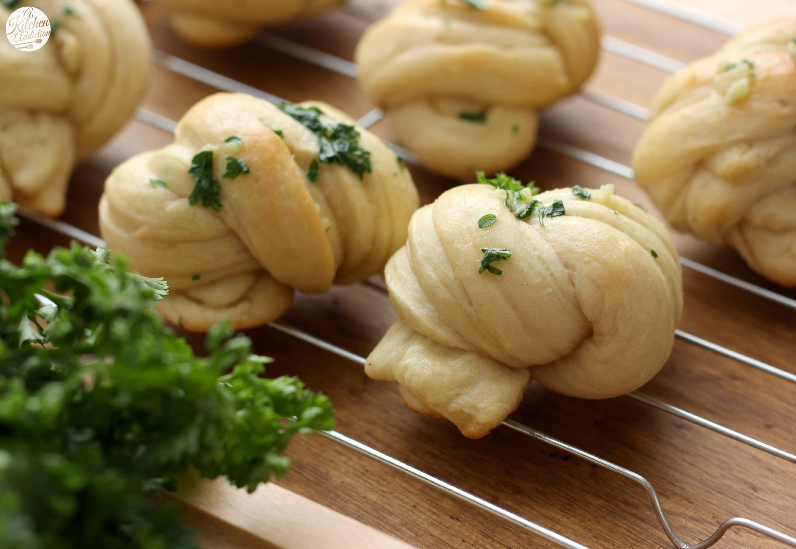

Two-Ingredient Dough Garlic Knots
These garlic knots begin with the “internet famous” 2-ingredient dough. Add a few more ingredients and you’ll have incredible garlic knots to serve with an Italian meal.

Ingredients
Bread Dough:
- 1 cup self-rising flour
- 1 cup whole fat plain Greek yogurt
- ¼ teaspoon granulated garlic
- ¼ teaspoon Italian seasoning
- 1 pinch salt
Garlic Topping:
- 1 tablespoon melted butter
- 1 tablespoon olive oil
- ½ teaspoon dried parsley
- ½ teaspoon garlic granules
Directions
- Combine flour, yogurt, garlic granules, Italian seasoning, and salt in a bowl; mix to combine.
- Dust work surface with more flour. Transfer dough to work surface. Knead dough for 8 to 10 minutes with the palm of your hand. Add more flour (1 teaspoon at a time) as needed to keep dough from being too sticky.
- Preheat the oven to 500°F (260°C). Line a baking sheet with parchment paper or a silicone baking mat (such as Silpat®).
- Shape dough into a rounded loaf. Using a bench scraper, cut off 8 wedges of dough. Roll each wedge of dough into a rope shape and tie into knots. Place knots onto the prepared baking sheet.
- Bake in the preheated oven until knots are lightly browned, 10 to 12 minutes.
- Meanwhile, combine melted butter, oil, garlic granules, and parsley for topping in a small glass bowl. Brush mixture over the warm knots.
Cook's Note:
Self-rising flour can be made by adding 1/4 tsp salt, and 1 1/2 tsp baking powder to all-purpose flour to equal 1 cup.